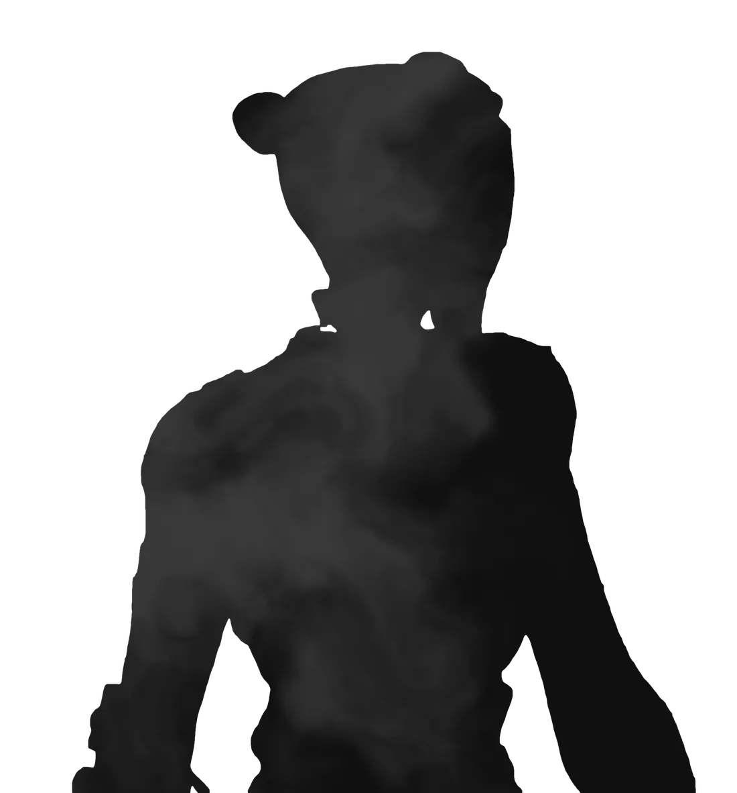

Cuentas destacadas
Revisa nuestro catálogo completo de cuentas.
Catálogo completo40 cuentas más en el catálogo · entrega acompañada paso a paso
Scroll
Tienda de cuentas

Revisa nuestro catálogo completo de cuentas.
Catálogo completo40 cuentas más en el catálogo · entrega acompañada paso a paso
Con 2 años de experiencia y más de 700 referencias, en AnxieStore priorizamos tu confianza y una atención personalizada. Buscamos ofrecerte un servicio cercano, seguro y diferente. Podrás encontrar nuestras referencias en Discord.